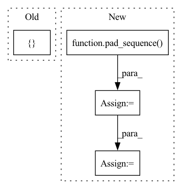

Pattern ID :19925

Before Change
if self.mode == 1:
return self.extractor(wavs)
elif self.mode == 2:
feats = []
for wav in wavs:
feat = self.extractor.extract_features(wav.unsqueeze(0), None)[
0
].squeeze(0)
After Change
elif self.mode == 2:
wav_lens = [len(wav) for wav in wavs]
wavs = pad_sequence(wavs, batch_first=True)
padding_mask = [
torch.arange(wavs.size(1)) >= wav_len for wav_len in wav_lens
]
padding_mask = torch.stack(padding_mask).to(self.device)
feats = self.extractor.extract_features(wavs, padding_mask)["x"]
feats = [f for f in feats]
In pattern: SUPERPATTERN
Frequency: 3
Non-data size: 4
Instances
Fragment ID: 64835256
Project Name: ga642381/robust-vc
Commit Name: 26399d6990737b2aa2afb010573a5e04d0804bb0
Time: 2021-10-12
Author: ga642381@gmail.com
File Name: S2VC/S2VC-robust/data/feature_extract.py
M Class Name: FeatureExtractor
N Class Name: FeatureExtractor
M Method Name: get_feature(2)
N Method Name: get_feature(2)
M Parent Class:
N Parent Class:
M File Name: S2VC/S2VC-robust/data/feature_extract.py
N File Name: S2VC/S2VC-robust/data/feature_extract.py
M Start Line: 76
M End Line: 86
N Start Line: 76
N End Line: 92
'>
Before Change
wav_lens = [mel_len * self.hop_len for mel_len in mel_lens]
max_mel_len = max(mel_lens)
mel_embs = []
for mel in mels:
mel = mel.unsqueeze(0)
mel_emb, _ = self.mel_rnn(mel)
After Change
max_mel_len = max(mel_lens)
max_wav_len = max_mel_len * self.hop_len
pad_mels = pad_sequence(mels, batch_first=True)
pack_mels = pack_padded_sequence(
pad_mels, torch.tensor(mel_lens), batch_first=True, enforce_sorted=False
)
pack_mel_embs, _ = self.mel_rnn(pack_mels)
mel_embs, _ = pad_packed_sequence(pack_mel_embs, batch_first=True)
// mel_embs: (batch, emb_dim, max_mel_len)
'>
Fragment ID: 64835237
Project Name: yistlin/universal-vocoder
Commit Name: decd133f652564aab54717a4e8df0316421e35c0
Time: 2020-10-07
Author: yishen992@gmail.com
File Name: models/universal_vocoder.py
M Class Name: UniversalVocoder
N Class Name: UniversalVocoder
M Method Name: generate(2)
N Method Name: generate(2)
M Parent Class: nn.Module
N Parent Class: nn.Module
M File Name: models/universal_vocoder.py
N File Name: models/universal_vocoder.py
M Start Line: 78
M End Line: 108
N Start Line: 77
N End Line: 106
'>
Before Change
def perplexity(sentence):
with torch.no_grad():
tokenize_input = tokenizer.tokenize(sentence)
tensor_input = torch.tensor([
[tokenizer.eos_token_id] +
tokenizer.convert_tokens_to_ids(tokenize_input)
])
loss, logits, *_ = model(tensor_input, labels=tensor_input)
After Change
torch.tensor([tokenizer.eos_token_id] + tokenizer.convert_tokens_to_ids(tokenizer.tokenize(sentence)))
for sentence in sentences
]
padded_tokens = pad_sequence(token_ids, batch_first=True)
tensor_input = padded_tokens.to(device)
loss, logits, *_ = model(tensor_input, labels=tensor_input, **fwd_args)
lp = 0
'>
Fragment ID: 64835233
Project Name: turtlesoupy/this-word-does-not-exist
Commit Name: 713d6187b1eb4b6bb9c532708d1cd2ebce5eba31
Time: 2020-03-08
Author: tdimson@gmail.com
File Name: wiki_article.py
M Class Name: AnonimousClass
N Class Name: AnonimousClass
M Method Name: perplexity(4)
N Method Name: perplexity(1)
M Parent Class:
N Parent Class:
M File Name: wiki_article.py
N File Name: wiki_article.py
M Start Line: 142
M End Line: 164
N Start Line: 139
N End Line: 147